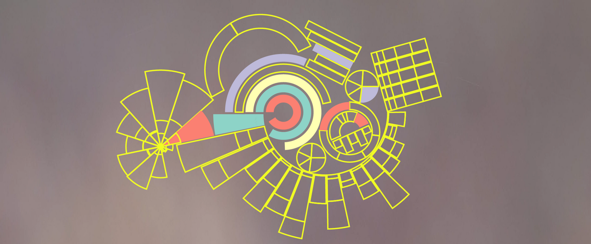

Diagrammes en ligne
Historique
Pourquoi des diagrammes à barres
La principale raison de les utiliser
- Représenter l’évolution de valeurs en fonction du temps ou d’une autre variable
La principale raison de ne pas l’utiliser
Le diagramme à barres et ses variantes
TBD
Avantages
Inconvénients
Recommandations
Les données
Recommandation 1
Testez par vous-même
Outils